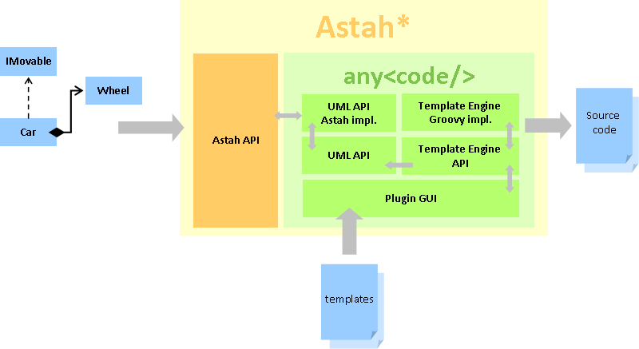

Anycode is a code generation plugin for Astah* modeling software. It exports UML models, packages, classes to any text files thanks to customizable templates written in Groovy language. It is designed in such a way that it does not depend on any target programming language. In other words, it's up to you to generate any source files, or even documentation.
It also provides a "directive" mechanism, i.e. : a set of functions that can be called from a template and that perform specific code generation tasks. Some of them are provided out of the box (Java, JPA, Objective-C) but you can also define your own libraries.
Astah* is a user friendly and lightweight UML tool, that enables to design domain models easily . Moreover, it provides a free community version as well as a free SDK to extend it, based on Maven projects, thus making it a highly customizable software.
Anycode aims to achieve the same goals toward code generation and these are the reasons why it is released as an Astah* plugin.

3 steps are needed before generating source code :
Once these steps are achieved, you can perform as many code generations as you want, and modify your model and your templates "live". Indeed, one of the advantages of Anycode is that it supports hot code replacement.
Behind the scene, anycode leans on several loosely coupled components :